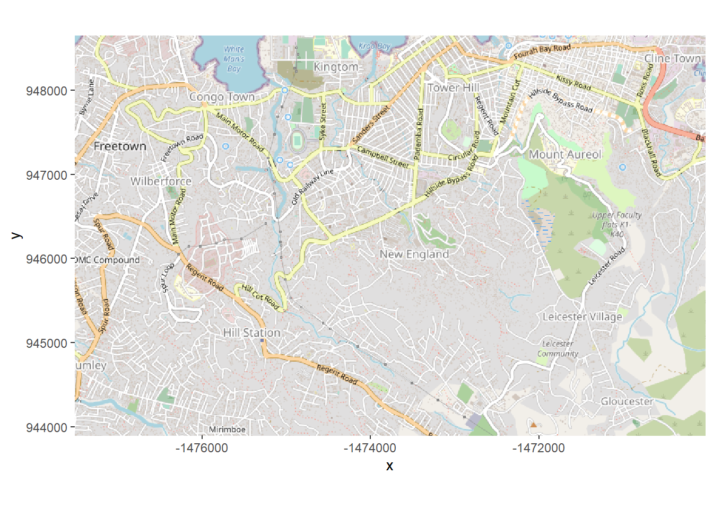
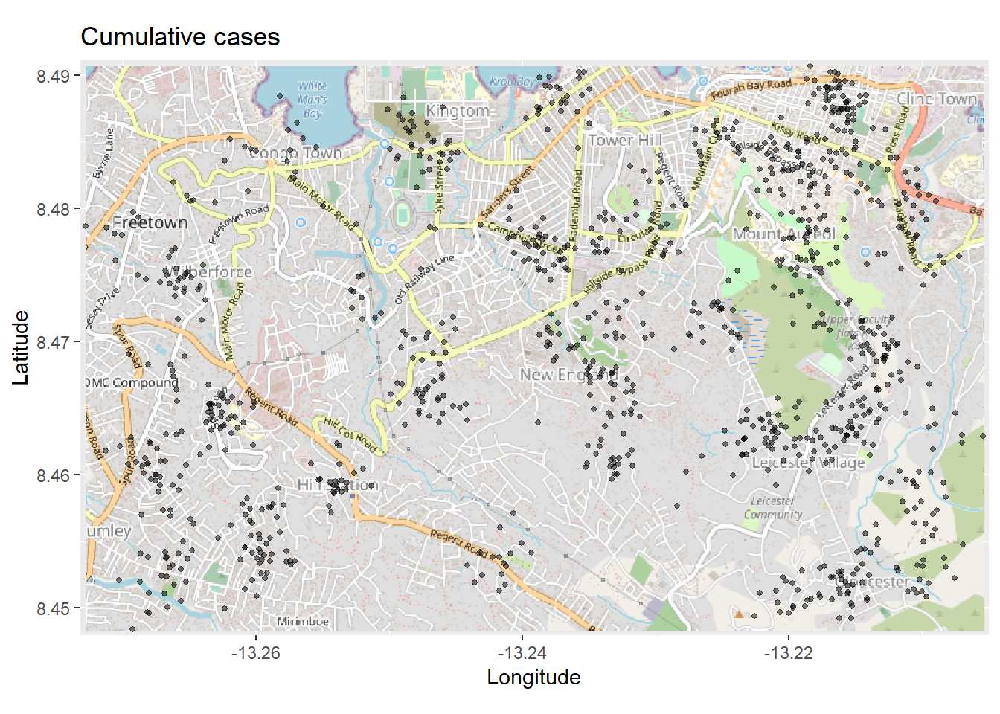
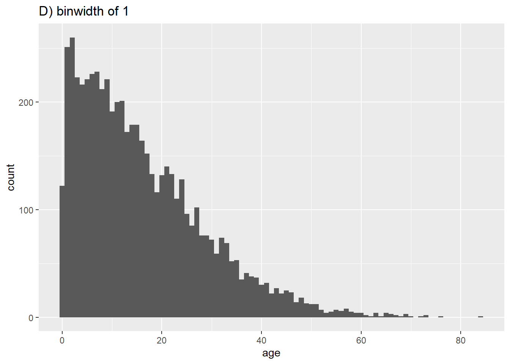
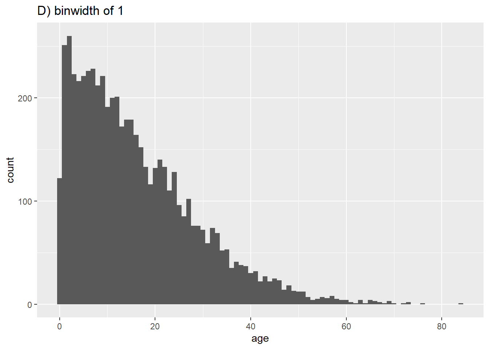
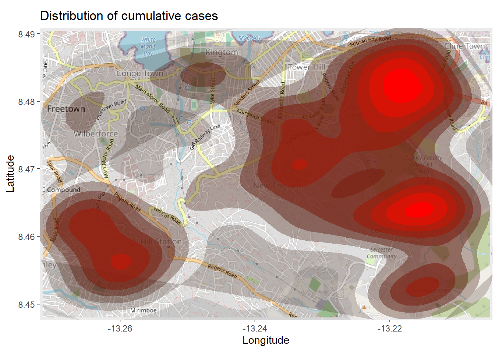
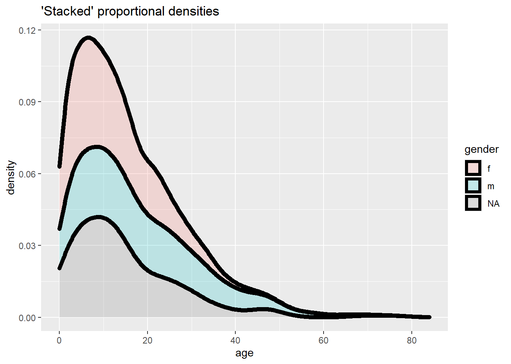
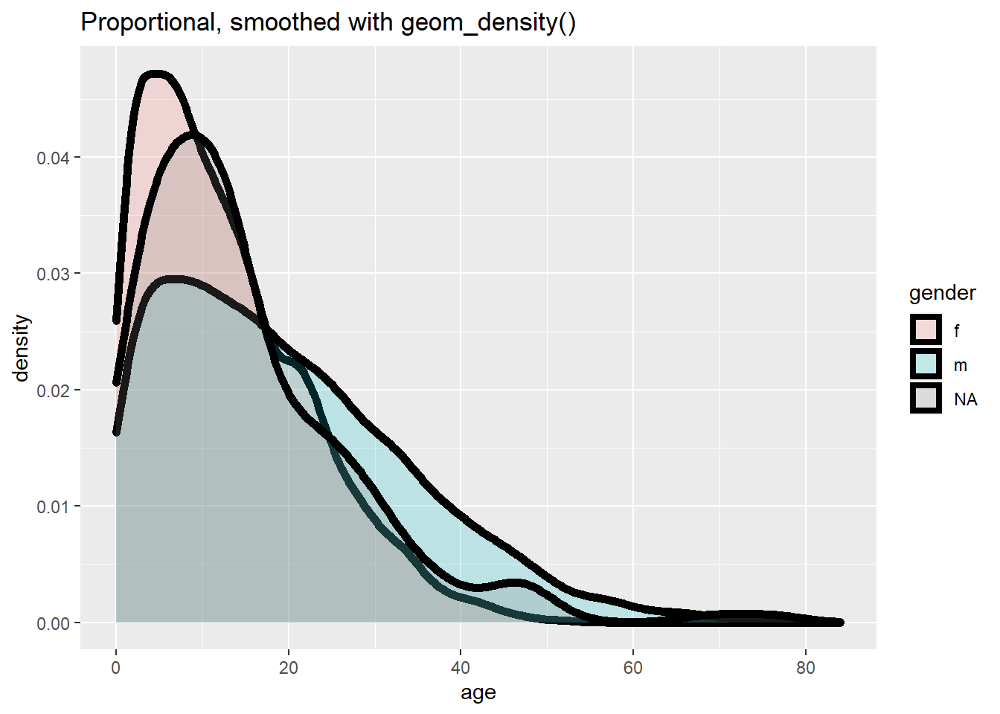
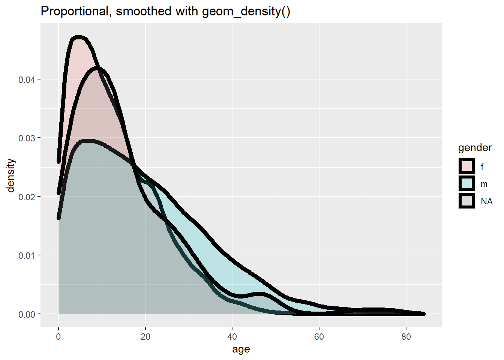
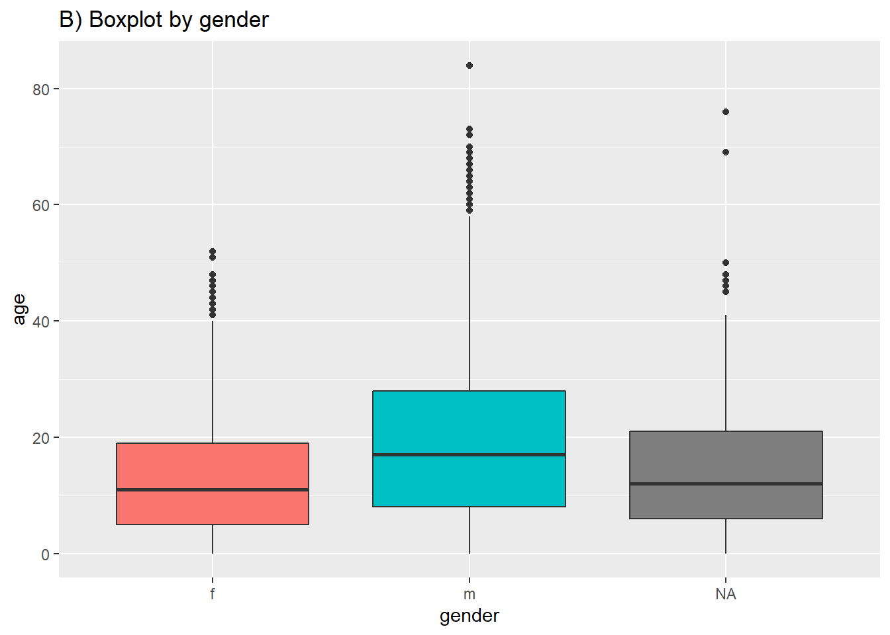

29 Conceptos básicos de ggplot

ggplot2 es el paquete de R más popular para la visualización de datos. Su función ggplot() es el núcleo de este paquete, y todo este enfoque se conoce coloquialmente como “ggplot”, con las figuras resultantes a veces llamadas afectuosamente “ggplots”. El “gg” en estos nombres se refiere a la “gramática de los gráficos” utilizada para construir las figuras. ggplot2 se beneficia de una amplia variedad de paquetes de R complementarios que mejoran aún más su funcionalidad.
La sintaxis es significativamente diferente de los dibujos de R base, y tiene una curva de aprendizaje asociada. El uso de ggplot2 generalmente requiere que el usuario formatee sus datos de una manera que sea altamente compatible con tidyverse, lo que en última instancia hace que el uso conjunto de estos paquetes sea muy eficaz.
En esta página cubriremos los fundamentos de la creación de gráficos con ggplot2. Consulta la página de consejos de ggplot para sugerencias y técnicas avanzadas para lograr que sus gráficos se vean realmente bien.
Hay varios tutoriales extensos de ggplot2 enlazados en la sección de recursos. También puede descargar esta hoja de trucos de visualización de datos con ggplot desde el sitio web de RStudio. Si quieres inspirarte en formas de visualizar tus datos de forma creativa, te sugerimos que revises sitios web como la galería de gráficos de R y Data-to-viz.
29.1 Preparación
29.1.1 Cargar paquetes
Este trozo de código muestra la carga de los paquetes necesarios para los análisis. En este manual destacamos p_load() de pacman, que instala el paquete si es necesario y lo carga para su uso. También podes cargar los paquetes instalados con library() de R base. Consulta la página sobre los fundamentos de R para obtener más información sobre los paquetes de R.
pacman::p_load(
tidyverse, # incluye ggplot2 y otras herramientas de gestión de datos
rio, # importación/exportación
here, # rutas d elos archivos
stringr # trabajar con caracteres
)29.1.2 Importar datos
Importamos el conjunto de datos de casos de una epidemia de Ebola simulada. Si quieres seguir el proceso, cliquea para descargar linelist “limpia” (como archivo .rds). Para importar sus datos utilizando la función import() del paquete rio (acepta muchos tipos de archivos como .xlsx, .rds, .csv - consulta la página de importación y exportación para más detalles).
linelist <- rio::import("linelist_cleaned.rds")A continuación se muestran las primeras 50 filas del listado. Nos centraremos en las variables continuas age, wt_kg (peso en kilos), ct_blood (valores de CT, cycle threshold, umbral de ciclo del test de PCR) y days_onset_hosp (diferencia entre la fecha de inicio de síntomas y la hospitalización).
29.1.3 Limpieza general
Cuando se preparan los datos para trazarlos (graficarlos), lo mejor es hacer que los datos se adhieran a los estándares de datos “ordenados” tanto como sea posible. En las páginas de gestión de datos de este manual, como Limpieza de datos y funciones básicas, se explica cómo conseguirlo.
Algunas formas sencillas de preparar nuestros datos para que sea mas fáciles trazarlos pueden incluir la mejora del contenido de los datos para su visualización, lo que no equivale necesariamente a una manipulación de los datos mas sencilla. Por ejemplo:
- Sustituye los valores
NAde una columna de caracteres por la cadena de caracteres “Unknown” (Desconocido) - Considera la posibilidad de convertir la columna en de tipo factor para que sus valores tengan niveles ordinales prescritos
- Limpia los valores de algunas columnas para cambiar texto “amigable con los datos” con barra baja, etc. a texto normal o a mayúsculas y minúsculas (ver Caracteres y cadenas)
He aquí algunos ejemplos de esto en acción:
# hace la versión de visualización de las columnas con nombres más amigables
linelist <- linelist %>%
mutate(
gender_disp = case_when(gender == "m" ~ "Male", # m a Masculino
gender == "f" ~ "Female", # f a Femenino,
is.na(gender) ~ "Unknown"), # NA a Desconocido
outcome_disp = replace_na(outcome, "Unknown") # sustituye el resultado NA por "unknown"
)29.1.4 Pivotar a lo largo
Como una cuestión de estructura de datos, para ggplot2 a menudo queremos pivotar nuestros datos en formatos largos. Lee más sobre esto en la página de Pivoteo de datos.

Por ejemplo, digamos que queremos trazar datos que están en un formato “a lo ancho”, como por ejemplo para cada caso en linelist y sus síntomas. A continuación creamos una minilista llamada symptoms_data que contiene sólo las columnas case_id y symptoms.
symptoms_data <- linelist %>%
select(c(case_id, fever, chills, cough, aches, vomit))Así es como se ven las primeras 50 filas de esta minilista - ¿ves cómo están formateadas “a lo ancho” con cada síntoma como una columna?
Si quisiéramos trazar el número de casos con síntomas específicos, estamos limitados por el hecho de que cada síntoma es una columna específica. Sin embargo, podemos hacer pivotar las columnas de síntomas a un formato más largo como este:
symptoms_data_long <- symptoms_data %>% # comienza con una "mini" lista de líneas llamada symptoms_data
pivot_longer(
cols = -case_id, # pivotea todas las columnas excepto case_id (todas las de síntomas)
names_to = "symptom_name", # se asigna un nombre a la nueva columna que contiene los síntomas
values_to = "symptom_is_present") %>% # se asigna un nombre a la nueva columna que contiene los valores (yes/no)
mutate(symptom_is_present = replace_na(symptom_is_present, "unknown")) # convierte NA en "unknown"Aquí están las primeras 50 filas. Observa que cada caso tiene 5 filas - una para cada síntoma posible. Las nuevas columnas symptom_name y symptom_is_present son el resultado del pivote. Ten en cuenta que este formato puede no ser muy útil para otras operaciones, pero es útil para trazar.
29.2 Fundamentos de ggplot
“Gramática de los gráficos” - ggplot2
El trazado con ggplot2 se basa en “añadir” capas de trazado y elementos de diseño unos sobre otros, añadiendo cada comando a los anteriores con un símbolo de suma (+). El resultado es un objeto de trazado multicapa que se puede guardar, modificar, imprimir, exportar, etc.
Los objetos ggplot pueden ser muy complejos, pero el orden básico de las capas suele ser el siguiente:
- Comienza con el comando
ggplot()como punto de partida - esto “abre” el ggplot y permite agregar las funciones subsecuentes con+. Normalmente, el conjunto de datos también se especifica en este comando - Añadí capas “geom” - estas funciones visualizan los datos como geometrías (formas), por ejemplo, como un gráfico de barras, un gráfico de líneas, un gráfico de dispersión, un histograma (¡o una combinación!). Todas estas funciones comienzan con
geom_como prefijo. - Añadí elementos de diseño al gráfico, como etiquetas de ejes, título, fuentes, tamaños, esquemas de color, leyendas o rotación de ejes.
Un ejemplo sencillo del esqueleto del código es el siguiente. Explicaremos cada componente en las secciones siguientes.
# Traza los datos de las columnas de my_data como puntos rojos
ggplot(data = my_data)+ # Usa el conjunto de datos my_data"
geom_point( # añade una capa de puntos
mapping = aes(x = col1, y = col2), # "asigna" la columna de datos a los ejes
color = "red")+ # otras especificaciones para el geom
labs()+ # aquí se añaden los títulos, las etiquetas de los ejes, etc.
theme() # aquí se ajusta el color, la fuente, el tamaño, etc. de los elementos de trazado no relacionados con los datos (ejes, título, etc.)
29.3 ggplot()
El comando de apertura de cualquier gráfico ggplot2 es ggplot(). Este comando simplemente crea un lienzo en blanco sobre el que añadir capas. Se “abre” el camino para añadir más capas con un símbolo +.
Normalmente, el comando ggplot() incluye el argumento data = para el gráfico. Esto establece el conjunto de datos que se utilizará de manera predeterminada para las capas posteriores del gráfico.
Este comando terminará con un + después de su paréntesis de cierre. Esto deja el comando “abierto”. El ggplot sólo se ejecutará/aparecerá cuando el comando completo incluya una capa final sin un + al final.
# Esto creará un lienzo en blanco
ggplot(data = linelist)29.4 Geoms
Un lienzo en blanco no es suficiente: necesitamos crear geometrías (formas o tipos de gráfico) a partir de nuestros datos (por ejemplo, gráficos de barras, histogramas, gráficos de dispersión, gráficos de caja).
Esto se hace añadiendo capas “geoms” al comando inicial ggplot(). Hay muchas funciones de ggplot2 que crean “geoms”. Cada una de estas funciones comienza con “geom_”, por lo que nos referiremos a ellas genéricamente como geom_XXXX(). Hay más de 40 geoms disponibles en ggplot2 y muchos otros creados por fans. Míralos en la galería de ggplot2. Algunos geoms de uso común se enumeran a continuación:
- Histogramas -
geom_histogram() - Gráficos de barras -
geom_bar()ogeom_col()(véase la sección “Gráfico de barras”) - Gráficos de caja -
geom_boxplot() - Puntos (por ejemplo, gráficos de dispersión) -
geom_point() - Gráficos de líneas -
geom_line()ogeom_path() - Líneas de tendencia -
geom_smooth()
En un gráfico se pueden exponer uno o varios geoms. Cada uno se añade a los comandos anteriores de ggplot2 con un +, y se agregan secuencialmente de manera que los geoms posteriores se trazan encima de los anteriores.
29.5 Asignación de datos al gráfico
A la mayoría de las funciones geom hay que darle instrucciones sobre qué elementos utilizar para crear sus formas, por lo que hay que indicarles cómo se deben asignar las columnas de los datos a los distintos componentes del gráfico, como los ejes, los colores de las formas, los tamaños de las formas, etc. Para la mayoría de las funciones geom, los componentes esenciales que deben asignarse a las columnas de los datos son el eje-x y (si es necesario) el eje-y.
Este “mapeo” (o asignación) se produce con el argumento mapping =. Los mapeos que proporciones a mapping deben estar envueltos en la función aes(), por lo que hay que escribir algo como mapping = aes(x = col1, y = col2), como se muestra a continuación.
A continuación, en el comando ggplot() los datos se identifican utilizando el termino linelist . En el argumento mapping = aes() la columna age se asigna al eje-x, y la columna wt_kg se asigna al eje-y.
Después de agregar un +, los comandos de trazado pueden continuar. Se crea una forma o tipo de gráfico con la función de “geom” denominada geom_point(). Este geom hereda los mapeos del comando ggplot() anterior - conoce las asignaciones eje-columna y procede a visualizar esas relaciones como puntos en el lienzo.
ggplot(data = linelist, mapping = aes(x = age, y = wt_kg))+
geom_point()
Otro ejemplo que presentamos a continuación demuestra el uso de los mismos datos pero con un mapeo ligeramente diferente y utilizando un geom diferente. Ahora utilizamos la función geom_histogram() que sólo requiere una columna mapeada en el eje-x, ya que el eje-y de conteo de casos (‘count’) se genera automáticamente.
ggplot(data = linelist, mapping = aes(x = age))+
geom_histogram()
29.5.1 Estética del gráfico
En la terminología de ggplot, la “estética” de un gráfico tiene un significado específico. Se refiere a una propiedad visual de los datos trazados. Ten en cuenta que “estética” aquí se refiere a los datos que se trazan en geoms / formas - no a lo que aparece en la periferia, tales como títulos, etiquetas de los ejes, el color de fondo, como podría comúnmente asociarse con la palabra “estética”. En ggplot esos detalles se llaman “temas” y se ajustan dentro de un comando denominado theme() (ver esta sección).
Por lo tanto, la estética de los objetos de ploteo puede ser colores, tamaños, transparencias, colocación, etc. de los datos ploteados. No todos los geoms tendrán las mismas opciones estéticas, pero muchas pueden ser utilizadas por la mayoría de los geoms. He aquí algunos ejemplos:
-
shape =Representar un punto congeom_point()con forma de punto, estrella, triángulo o cuadrado… -
fill =El color interior (por ejemplo, de una barra o boxplot) -
color =El color de la línea exterior o borde de una barra, boxplot, etc., o el color del perimetro del punto si se utilizageom_point() -
size =El tamaño (por ejemplo, grosor de línea, tamaño de punto) -
alpha =Transparencia (1 = opaco, 0 = invisible) -
binwidth =Ancho de los bins (o cubos) del histograma -
width =Ancho de las columnas del “diagrama de barras” -
linetype =Tipo de línea (por ejemplo, sólida, discontinua, punteada)
A esta estética de los objetos del gráfico se le pueden asignar valores de dos maneras:
Se asigna un valor estático (por ejemplo,
color = "blue") que se aplica a todas las observaciones trazadasSe asigna a una columna de los datos (por ejemplo,
color = hospital) de manera que la visualización de cada observación depende de su valor en esa columna
29.5.2 Asignar un valor estático
Si se desea que la estética del objeto de trazado sea estática, es decir, que sea la misma para cada observación de los datos, se escribe su asignación dentro del geom pero fuera del comando mapping = aes(). Estas asignaciones podrían escribirse como size = 1 o color = "blue". Aquí hay dos ejemplos:
En el primer ejemplo, el
mapping = aes()está en el comandoggplot()y los ejes se asignan a las columnas de edad (age) y peso (wt_kg) en los datos. La estética del gráficocolor =,size =, yalpha =(transparencia) se asignan a valores estáticos. Aclaramos que la asignación de valores estéticos de naturaleza estática se hace en la funcióngeom_point(), ya que se pueden añadir otros geoms después que tomarían valores estéticos diferentesEn el segundo ejemplo, el histograma requiere sólo el eje-x mapeado a una columna. El
binwidth =(el ancho de los cubos), elcolor =(el color del borde de los cubos), elfill =(color interno o color de relleno de los cubos), y elalpha =(la transparencia del color de los cubos) se establecen dentro del geom como valores estáticos.
# scatterplot
ggplot(data = linelist, mapping = aes(x = age, y = wt_kg))+ # establecer datos y ejes de mapeo
geom_point(color = "darkgreen", size = 0.5, alpha = 0.2) # establecer la estética de los puntos estáticos
# histogram
ggplot(data = linelist, mapping = aes(x = age))+ # establecer datos y ejes
geom_histogram( # mostrar histograma
binwidth = 7, # anchura de los bins (cuadrados)
color = "red", # color de la línea del bin
fill = "blue", # color del interior del bin
alpha = 0.1) # transparencia del bin
29.5.3 Escalado a los valores de la columna
Como alternativa al uso de estéticas de naturaleza estática, se pueden graficar objetos con tamaños proporcionales a sus valores como aparecen en su respectiva columna. Con este enfoque, la visualización de esta estética dependerá del valor de esa observación en la columna de datos correspondiente. Si los valores de la columna son continuos, la escala de visualización (en la leyenda) para esa estética será continua. Si los valores de la columna son discretos, la leyenda mostrará cada valor y los datos trazados aparecerán claramente “agrupados” (lea más en la sección de agrupación de esta página).
Para conseguir esto, se asigna esa estética de gráfico a un nombre de columna o variable (sin utilizar comillas). Esto debe hacerse dentro del comando mapping = aes()(nota: hay varios lugares en el código donde puedes hacer estas asignaciones de mapeo, como se discute a continuación).
Presentamos dos ejemplos a continuación.
- En el primer ejemplo, la estética d
color =(de cada punto) está mapeada a la columnaage- ¡y ha aparecido una escala en una leyenda! Por ahora sólo hay que tener en cuenta que la escala existe - mostraremos cómo modificarla en secciones posteriores. - En el segundo ejemplo, dos nuevas estéticas de trazado se asignan a columnas (
color =ysize =), mientras que las estéticas de trazadoshape =yalpha =se asignan a valores estáticos fuera de cualquier función demapping = aes().
# scatterplot
ggplot(data = linelist, # establecer los datos
mapping = aes( # asignar la estética a los valores de la columna
x = age, # asigna el eje-x a la edad
y = wt_kg, # asignar el eje-y al peso
color = age) # asignar el color a la edad
)+
geom_point() # mostrar los datos como puntos
# scatterplot
ggplot(data = linelist, # establecer los datos
mapping = aes( # asignar la estética a los valores de la columna
x = age, # asigna el eje-x a la edad
y = wt_kg, # asignar el eje-y al peso
color = age, # asignar el color a la edad
size = age))+ # asignar el tamaño a la edad
geom_point( # mostrar los datos como puntos
shape = "diamond", # los puntos se muestran como diamantes
alpha = 0.3) # transparencia de los puntos al 30%

Nota: Los ejes siempre se asignan a las columnas de los datos o variables (no a los valores estáticos), y esto se hace siempre dentro de mapping = aes().
Es importante mantener un seguimiento de las capas y las estéticas se hacen gráficos más complejos, por ejemplo, gráficos con múltiples geom. En el ejemplo siguiente, la estetica size = se asigna dos veces - una para geom_point() y otra para geom_smooth() - ambas veces como un valor estático.
ggplot(data = linelist,
mapping = aes( # asignar la estética a las columnas
x = age,
y = wt_kg,
color = age_years)
) +
geom_point( # añadir puntos para cada fila de datos
size = 1,
alpha = 0.5) +
geom_smooth( # añadir una línea de tendencia
method = "lm", # con método lineal
size = 2) # tamaño (ancho de la línea) de 229.5.4 Dónde hacer las asignaciones
La asignación de estéticas dentro de mapping = aes() puede hacerse en varios lugares en sus comandos e incluso puede escribirse más de una vez. Esto puede ser escrito en el comando ggplot() inicial, y/o en cada geom individual debajo. Los matices incluyen:
Las asignaciones de estéticas realizadas en el comando
ggplot()inicial se heredarán por defecto en cualquier geom a continuación, al igual que se heredanx =ey =Las asignaciones realizadas dentro de un geom se aplican sólo a ese geom
Del mismo modo, el comando data = especificado en el ggplot() inicial se aplicará por defecto a cualquier geom que se agregue a continuación, pero también se podrían especificar datos para cada geom (pero esto es más difícil).
Así, cada uno de los siguientes comandos creará el mismo gráfico:
# Estos comandos producirán exactamente el mismo gráfico
ggplot(data = linelist, mapping = aes(x = age))+
geom_histogram()
ggplot(data = linelist)+
geom_histogram(mapping = aes(x = age))
ggplot()+
geom_histogram(data = linelist, mapping = aes(x = age))29.5.5 Grupos
Puedes agrupar fácilmente los datos y “graficar por grupo”. De hecho, ¡ya lo has hecho!
Asigna la columna que quieres agrupar a la estética adecuada, dentro del comando mapping = aes(). Más arriba hemos mostrado esto usando valores continuos cuando asignamos el tamaño del punto usando size = a la columna age. Sin embargo, esto funciona de la misma manera con columnas o variables discretas/categóricas.
Por ejemplo, si quieres agrupar los puntos por género asignándole un color distinto a cada genero, deberás establecer mapping = aes(color = gender). Automáticamente aparecerá una leyenda. Esta asignación puede hacerse dentro de mapping = aes() en el comando ggplot() inicial (y ser heredado por el geom), o podría asignarse dentro de mapping = aes() escrito dentro del comando de geom. Ambos enfoques se muestran a continuación:
ggplot(data = linelist,
mapping = aes(x = age, y = wt_kg, color = gender))+
geom_point(alpha = 0.5)
# Este código alternativo produce el mísmo gráfico
ggplot(data = linelist,
mapping = aes(x = age, y = wt_kg))+
geom_point(
mapping = aes(color = gender),
alpha = 0.5)Tené en cuenta que dependiendo del tipo de geom, tendrás que utilizar diferentes argumentos para agrupar los datos. Para geom_point() lo más probable es que tengas que utilizar color =, shape = o size =. Mientras que para geom_bar() es más probable que utilices fill =. Esto dependerá del tipo de geom y de la estética del gráfico que deses usar para reflejar las agrupaciones.
Para tu información - la forma más básica de agrupar los datos es utilizando sólo el argumento group = dentro de mapping = aes(). Sin embargo, esto por sí mismo no cambiará los colores, el relleno o las formas. Tampoco creará una leyenda. Sin embargo, los datos están agrupados, por lo que las visualizaciones estadísticas pueden verse afectadas.
Para ajustar el orden de los grupos en un gráfico, consulta la página de consejos de ggplot o la página sobre Factores. Hay muchos ejemplos de gráficos agrupados en las secciones siguientes sobre el trazado de datos continuos y categóricos.
29.6 Facetas / Múltiplos pequeños
Las facetas, o “pequeños gráficos múltiples”, se utilizan para dividir un gráfico en una figura de varios paneles, con un panel (“faceta”) representando un grupo de datos. El mismo tipo de gráfico se crea varias veces, cada vez utilizando un subgrupo del mismo conjunto de datos.
El facetado es una funcionalidad que viene con ggplot2, por lo que las leyendas y los ejes de los paneles facetados se alinean automáticamente. Hay otros paquetes que abordamos en la página de consejos de ggplot que se utilizan para combinar gráficos representando conjuntos de datos completamente diferentes (cowplot y patchwork) en una figura.
El facetado se realiza con una de las siguientes funciones de ggplot2:
-
facet_wrap()Para mostrar un panel diferente para cada nivel de una unica variable. Un ejemplo de esto podría ser mostrar una curva de epidemia diferente para cada hospital de una región. Las facetas se ordenan alfabéticamente, a menos que la variable sea un factor con otro orden definido.
- Puedes invocar ciertas opciones para determinar la disposición de las facetas, por ejemplo,
nrow = 1oncol = 1para controlar el número de filas o columnas en las que se organizan los gráficos con facetas.
-
facet_grid()Se utiliza cuando se quiere introducir una segunda variable en la disposición de las facetas. Aquí cada panel de una cuadrícula muestra la intersección entre los valores de dos columnas. Por ejemplo, las curvas epidémicas para cada combinación hospital-grupo de edad con los hospitales en la parte superior (columnas) y los grupos de edad en los lados (filas).
-
nrowyncolno son relevantes, ya que los subgrupos se presentan en una cuadrícula
Cada una de estas funciones acepta una sintaxis de fórmula para especificar la(s) columna(s) para el facetado. Ambas aceptan hasta dos columnas, una a cada lado de la tilde ~.
Para
facet_wrap()lo más frecuente es escribir una sola columna precedida de una tilde~comofacet_wrap(~hospital). Sin embargo, puedes escribir dos columnasfacet_wrap(outcome~hospital)- cada combinación única se mostrará en un panel separado, pero no se organizarán en una cuadrícula. Los encabezados mostrarán los términos combinados y éstos no tendrán una lógica específica para las columnas frente a las filas. Si quieres proporcionar una sóla variable de facetado, debes utilizar un punto.como marcador de posición en el otro lado de la fórmula - mira los ejemplos de código.Para
facet_grid()también puedes especificar una o dos columnas en la fórmula (rows~columns). Si sólo quieres especificar una, puedes colocar un punto.al otro lado de la tilde comofacet_grid(. ~ hospital)ofacet_grid(hospital ~ .).
Las facetas pueden contener rápidamente una cantidad abrumadora de información, por lo que conviene asegurarse de no tener demasiados niveles de cada variable por la que se elija hacer la faceta. He aquí algunos ejemplos rápidos con el conjunto de datos sobre la malaria (véase Descargar el manual y los datos), que consiste en el recuento diario de casos de malaria en los centros, por grupos de edad.
A continuación importamos y hacemos algunas modificaciones rápidas para simplificar la tarea:
# Estos datos son recuentos diarios de casos de paludismo, por centro-día
malaria_data <- import(here("data", "malaria_facility_count_data.rds")) %>% # importa
select(-submitted_date, -Province, -newid) # elimina columnas innecesariasA continuación se muestran las primeras 50 filas de los datos sobre la malaria. Observa que hay una columna malaria_tot, pero también columnas para los recuentos por grupo de edad (que se utilizarán en el segundo ejemplo de facet_grid()).
29.6.1 facet_wrap()
Por el momento, vamos a centrarnos en las columnas malaria_tot y District. Ignoremos por ahora las columnas de recuento por edad. Trazaremos las curvas epidémicas con geom_col(), que produce una columna para cada día a la altura del eje-y especificada en la columna malaria_tot (los datos ya son recuentos diarios, por lo que utilizamos geom_col() - véase más adelante la sección “Diagrama de barras”).
Cuando añadimos el comando facet_wrap(), especificamos una tilde y a continuación la columna sobre la que hacer la faceta (District en este caso). Podés colocar otra columna a la izquierda de la tilde, - esto creará una faceta para cada combinación - pero te recomendamos que lo hagas con facet_grid() en su lugar. En este caso, se crea una faceta para cada valor único de District.
# Un gráfico con facetas por distrito
ggplot(malaria_data, aes(x = data_date, y = malaria_tot)) +
geom_col(width = 1, fill = "darkred") + # graficar los datos de recuento en forma de columnas
theme_minimal()+ # simplificar los paneles de fondo
labs( # añadir al gráfico etiquetas, título, etc.
x = "Date of report",
y = "Malaria cases",
title = "Malaria cases by district") +
facet_wrap(~District) # se crean las facetas
29.6.2 facet_grid()
Podemos utilizar un enfoque de facet_grid() para cruzar dos variables. Digamos que queremos cruzar District y edad. Bien, necesitamos hacer algunas transformaciones de datos en las columnas de edad para poner estos datos en el formato “largo” preferido por ggplot. Los grupos de edad tienen sus propias columnas - los queremos en una sola columna llamada age_group y otra llamada num_cases. Consulta la página sobre Pivoteo de datos para obtener más información sobre este proceso.
malaria_age <- malaria_data %>%
select(-malaria_tot) %>%
pivot_longer(
cols = c(starts_with("malaria_rdt_")), # elegir columnas para pivotar más largo
names_to = "age_group", # los nombres de las columnas se convierten en grupos de edad
values_to = "num_cases" # valores a una sola columna (num_cases)
) %>%
mutate(
age_group = str_replace(age_group, "malaria_rdt_", ""),
age_group = forcats::fct_relevel(age_group, "5-14", after = 1))Ahora las primeras 50 filas de datos tienen este aspecto:
Cuando se asignan las dos variables a facet_grid(), lo más fácil es utilizar la notación de fórmula (por ejemplo, x ~ y) donde x son filas e y son columnas. Aquí está el gráfico, utilizando facet_grid() que muestra los gráficos para cada combinación de las columnas age_group y District.
ggplot(malaria_age, aes(x = data_date, y = num_cases)) +
geom_col(fill = "darkred", width = 1) +
theme_minimal()+
labs(
x = "Date of report",
y = "Malaria cases",
title = "Casos de malaria por distrito y grupo de edad"
) +
facet_grid(District ~ age_group)29.6.3 Ejes libres o fijos
Las escalas de los ejes que se muestran en gráficos facetados son, por defecto, las mismas (fijas) en todas las facetas. Esto es útil para las comparaciones cruzadas, pero no siempre es apropiado.
Al utilizar facet_wrap() o facet_grid(), podemos añadir scales = "free_y" para “liberar” los ejes-y de los paneles para que se ajuste la escala adecuadamente en relación a su subconjunto de datos. Esto es particularmente útil si los recuentos reales son pequeños para una de las subcategorías y las tendencias son difíciles de ver. En lugar de “free_y” también podemos escribir “free_x” para hacer lo mismo con el eje-x (por ejemplo, para las fechas) o “free” para liberar ambos ejes. Ten en cuenta que en facet_grid, las escalas de y serán las mismas para las facetas en la misma fila, y las escalas de x serán las mismas para las facetas en la misma columna.
Cuando se utiliza facet_grid solamente, podemos añadir space = "free_y" o space = "free_x" para que la altura o el ancho de la faceta sea ponderada en relación a los valores de la figura en su interior. Esto sólo funciona si ya se ha asignado scale = "free" (y o x).
# Free y-axis
ggplot(malaria_data, aes(x = data_date, y = malaria_tot)) +
geom_col(width = 1, fill = "darkred") + # graficar los datos de recuento en forma de columnas
theme_minimal()+ # simplificar los paneles de fondo
labs( # añadir al gráfico etiquetas, título, etc..
x = "Date of report",
y = "Malaria cases",
title = "Malaria cases by district - 'free' x and y axes") +
facet_wrap(~District, scales = "free") # se crean las facetas
29.6.4 Orden del nivel de los factores en las facetas
Consulta esta entrada sobre cómo reordenar los niveles de los factores dentro de las facetas.
29.7 Almacenamiento de gráficos
29.7.1 Guardar los gráficos
Cuando se ejecuta un comando ggplot(), el gráfico se mostrará en el panel de Plots RStudio de manera predeterminada. Sin embargo, también podés guardar el gráfico como un objeto utilizando el operador de asignación <- y asignandole un nombre. Entonces el gráfico no se mostrará a menos que se ejecute el nombre del objeto mismo. También podés mostrarlo envolviendo el nombre del gráfico con print(), pero esto sólo es necesario en ciertas circunstancias, como cuando el gráfico se crea dentro de un loop for o bucle utilizado para imprimir múltiples gráficos a la vez (véase la página Iteración, bucles y listas ).
# define plot
age_by_wt <- ggplot(data = linelist, mapping = aes(x = age_years, y = wt_kg, color = age_years))+
geom_point(alpha = 0.1)
# print
age_by_wt 29.7.2 Modificación de gráficos guardados
Una gran ventaja de ggplot2 es que podés definir un gráfico (como se ve arriba), y luego añadirle capas empezando por su nombre sin necesidad de repetir todos los comandos que crearon el gráfico original.
Por ejemplo, si se desea modificar el gráfico age_by_wt que se definió anteriormente, para incluir una línea vertical a la edad de 50 años, sólo tendríamos que añadir un + y empezar a añadir capas adicionales al gráfico.
age_by_wt+
geom_vline(xintercept = 50)
29.7.3 Exportación de gráficos
La exportación de ggplots es fácil con la función ggsave() de ggplot2. Puede funcionar de dos maneras, ya sea:
- Especifica el nombre del objeto del gráfico, a continuación, la ruta del archivo y el nombre del archivo incluyendo la extensión
- Por ejemplo:
ggsave(my_plot, here("plots", "my_plot.png"))
- Por ejemplo:
- Ejecuta el comando con sólo una ruta de archivo, para guardar el último gráfico que se imprimió en pantalla
- Por ejemplo:
ggsave(here("plots", "my_plot.png"))
- Por ejemplo:
Puedes exportar como png, pdf, jpeg, tiff, bmp, svg, o varios otros tipos de archivos, especificando la extensión del archivo en la ruta del mismo.
También puedes especificar los argumentos width =, height = y units = (ya sea “in”, “cm” o “mm”). Asimismo podés especificar dpi = asignando un número para la resolución del trazado (por ejemplo, 300). Consulta los detalles de la función ejecutando ?ggsave o leyendo la documentación en línea.
Recuerda que podés utilizar la sintaxis here() para proporcionar la ruta de archivo deseada. Consulta la página de importación y exportación para obtener más información.
29.8 Etiquetas
Seguramente querrás añadir o ajustar las etiquetas del gráfico. Esto se hace más fácilmente dentro de la función labs() que se añade al gráfico con + al igual que los geoms.
Dentro de labs() podes proporcionar cadenas de caracteres a estos argumentos:
-
x =ey =El título del eje-x y del eje-y (etiquetas) -
title =El título del gráfico principal -
subtitle =El subtítulo del gráfico, en texto más pequeño debajo del título -
caption=El pie del gráfico, que aparecerá en la parte inferior derecha de manera predeterminada
Aquí está el mismo gráfico que hicimos antes, pero con etiquetas más bonitas:
age_by_wt <- ggplot(
data = linelist, # establecer los datos
mapping = aes( # asignar la estética a los valores de la columna
x = age, # asigna el eje-x a la edad
y = wt_kg, # asignar el eje-y al peso
color = age))+ # asignar el color a la edad
geom_point()+ # mostrar los datos como puntos
labs(
title = "Age and weight distribution",
subtitle = "Fictional Ebola outbreak, 2014",
x = "Age in years",
y = "Weight in kilos",
color = "Age",
caption = stringr::str_glue("Data as of {max(linelist$date_hospitalisation, na.rm=T)}"))
age_by_wtObserva cómo en la asignación del pie del gráfico hemos utilizado str_glue() del paquete stringr para integrar código R dinámico dentro del texto de la cadena. El pie del gráfico mostrará la fecha “Datos a partir de:” que refleja la fecha máxima de hospitalización en el listado de datos. Puedes leer más sobre esto en la página sobre Caracteres y cadenas.
Una nota sobre la especificación del título de la leyenda: No hay un argumento “título de la leyenda”, ya que podrías tener múltiples escalas en tu leyenda. Dentro de labs(), podes escribir el argumento de la estética del gráfico utilizado para crear la leyenda, y proporcionar el título de esta manera. Por ejemplo, arriba asignamos color = age para crear la leyenda. Por lo tanto, proporcionamos color = a labs() y asignamos el título de la leyenda deseado (“Age” con A mayúscula). Si se crea la leyenda con aes(fill = COLUMN), entonces en labs() se escribiría fill = para ajustar el título de esa leyenda. La sección sobre escalas de color en la página de consejos de ggplot proporciona más detalles sobre la edición de leyendas, y un enfoque alternativo utilizando las funciones scales_().
29.9 Temas
Una de las mejores partes de ggplot2 es el nivel de control que tienes sobre el gráfico - ¡puedes definir lo que quieras! Como se mencionó anteriormente, los aspectos de diseño del gráfico que no está relacionados con las formas/geometrías de los datos se ajustan dentro de la función theme(). Por ejemplo, el color de fondo del gráfico, la presencia/ausencia de líneas de cuadrícula, y la fuente/tamaño/color/alineación del texto (títulos, subtítulos, pie de gráfico, texto de los ejes…). Estos ajustes pueden realizarse de dos maneras:
Añadiendo una función
theme_()[*completa]*](https://ggplot2.tidyverse.org/reference/ggtheme.html) para realizar ajustes de barrido – estas funciones de tema completo incluyentheme_classic(),theme_minimal(),theme_dark(),theme_light() theme_grey(),theme_bw()entre otrasAjustando cada pequeño aspecto del gráfico individualmente dentro de
theme()
29.9.1 Temas completos
Como son bastante sencillas, demostraremos las funciones del tema completo a continuación y no las describiremos más aquí. Ten en cuenta que cualquier microajuste con theme() debe hacerse después de utilizar un tema completo.
Escribílos con paréntesis vacíos.
ggplot(data = linelist, mapping = aes(x = age, y = wt_kg))+
geom_point(color = "darkgreen", size = 0.5, alpha = 0.2)+
labs(title = "Theme classic")+
theme_classic()
ggplot(data = linelist, mapping = aes(x = age, y = wt_kg))+
geom_point(color = "darkgreen", size = 0.5, alpha = 0.2)+
labs(title = "Theme bw")+
theme_bw()
ggplot(data = linelist, mapping = aes(x = age, y = wt_kg))+
geom_point(color = "darkgreen", size = 0.5, alpha = 0.2)+
labs(title = "Theme minimal")+
theme_minimal()
ggplot(data = linelist, mapping = aes(x = age, y = wt_kg))+
geom_point(color = "darkgreen", size = 0.5, alpha = 0.2)+
labs(title = "Theme gray")+
theme_gray()


29.9.2 Modificar el tema
La función theme() puede tomar un gran número de argumentos, cada uno de los cuales edita un aspecto específico del gráfico. No hay manera de que podamos cubrir todos los argumentos, pero describiremos el patrón general para ellos y te mostraremos cómo encontrar el nombre del argumento que necesitas. La sintaxis básica es esta:
- Dentro de
theme()escribe el nombre del argumento del elemento del gráfico que queres editar, comoplot.title = - Proporciona una función
element_()al argumento- Lo más habitual es utilizar
element_text(), pero tambiénelement_rect()para los colores de fondo del lienzo, oelement_blank()para eliminar los elementos del gráfico
- Lo más habitual es utilizar
- Dentro de la función
element_(), escribi las asignaciones de argumentos para realizar los ajustes finos que desees
Esa descripción es bastante abstracta, así que aquí hay algunos ejemplos.
El siguiente gráfico parece tonto, pero sirve para mostrarte una variedad de formas en las que podes ajustar su gráfico.
- Comenzamos con el gráfico
age_by_wtdefinido anteriormente y añadimostheme_classic() - Para realizar ajustes más finos, añadimos
theme()e incluimos un argumento por cada elemento del gráfico que queremos ajustar
Puede ser util organizar los argumentos en secciones lógicas. A continuación se describen algunos argumentos utilizados:
-
legend.position =es el único argumento que acepta valores simples como “abajo”, “arriba”, “izquierda” y “derecha”.Por lo general, los argumentos relacionados con el texto requieren que se coloquen los detalles dentro deelement_text(). - Tamaño del título se ajusta con
element_text(size = 30) - La alineación horizontal del pie del gráfico se logran con el argumento
element_text(hjust = 0)(de derecha a izquierda) - El subtítulo aparece en cursiva gracias al argumento
element_text(face = "italic")
age_by_wt +
theme_classic()+ # pre-defined theme adjustments
theme(
legend.position = "bottom", # move legend to bottom
plot.title = element_text(size = 30), # size of title to 30
plot.caption = element_text(hjust = 0), # left-align caption
plot.subtitle = element_text(face = "italic"), # italicize subtitle
axis.text.x = element_text(color = "red", size = 15, angle = 90), # adjusts only x-axis text
axis.text.y = element_text(size = 15), # adjusts only y-axis text
axis.title = element_text(size = 20) # adjusts both axes titles
) Aquí hay algunos argumentos de theme() especialmente comunes. Reconocerás algunos patrones, como añadir .x o .y para aplicar el cambio sólo a un eje.
argumento de theme() argument |
Lo que ajusta |
|---|---|
plot.title = element_text() |
El título |
plot.subtitle = element_text() |
El subtítulo |
plot.caption = element_text() |
La leyenda (familia, cara, color, tamaño, ángulo, vjust (justificación vertical), hjust (justificación horizontal)…) |
axis.title = element_text() |
Títulos de los ejes (tanto x como y) (tamaño, cara, ángulo, color…) |
axis.title.x = element_text() |
Título del eje-x solamente (usar .y para el eje-y solamente) |
axis.text = element_text() |
Texto de los ejes (x e y) |
axis.text.x = element_text() |
Texto del eje-x solamente (usar .y para el eje-y solamente) |
axis.ticks = element_blank() |
Eliminar las marcas del eje |
axis.line = element_line() |
Líneas del eje (color, tamaño, tipo de línea: sólida, punteada, etc.) |
strip.text = element_text() |
Texto de la tira de facetas (color, cara, tamaño, ángulo…) |
strip.background = element_rect() |
Tira de facetas (relleno, color, tamaño…) |
Pero ¡hay tantos argumentos de tema! ¿Cómo podría recordarlos todos? No te preocupes, es imposible recordarlos todos. Por suerte, hay algunas herramientas que te ayudarán:
La documentación de tidyverse sobre la modificación del tema, tiene una lista completa.
CONSEJO: Ejecuta theme_get() de ggplot2 para imprimir en pantalla una lista de los más de 90 argumentos de theme() en la consola.
CONSEJO: Si alguna vez quieres eliminar un elemento de un gráfico, también puedes hacerlo a través de theme(). Basta con pasar element_blank() a un argumento para que desaparezca por completo. Para eliminar leyendas, puedes asignar legend.position = "none".
29.10 Colores
Consulta esta sección sobre las escalas de color de la página de consejos de ggplot.
29.11 Piping en ggplot2
Cuando se utilizan pipes para limpiar y transformar los datos, es fácil pasar los datos transformados a ggplot().
Las pipes que pasan el conjunto de datos de función a función se convertiran a + una vez que se invoque a la función ggplot(). Ten en cuenta que, en este caso, no es necesario especificar el argumento data =, ya que éste se define automáticamente como el conjunto de datos canalizado.
Así es como podría verse:
linelist %>% # begin with linelist
select(c(case_id, fever, chills, cough, aches, vomit)) %>% # select columns
pivot_longer( # pivot longer
cols = -case_id,
names_to = "symptom_name",
values_to = "symptom_is_present") %>%
mutate( # replace missing values
symptom_is_present = replace_na(symptom_is_present, "unknown")) %>%
ggplot( # begin ggplot!
mapping = aes(x = symptom_name, fill = symptom_is_present))+
geom_bar(position = "fill", col = "black") +
theme_classic() +
labs(
x = "Symptom",
y = "Symptom status (proportion)"
)
29.12 Trazado de datos continuos
A lo largo de esta página, ya has visto muchos ejemplos de trazado de datos continuos. Aquí los consolidamos brevemente y presentamos algunas variaciones. Las visualizaciones que aquí se cubren incluyen:
- Gráficos para una variable continua:
- Histogram, un gráfico clásico para presentar la distribución de una variable continua.
- Gráfico de caja (también llamado de caja y bigotes), para mostrar los percentiles 25, 50 y 75, los extremos de la cola de la distribución y los valores atípicos (limitaciones importantes).
- Gráfico de fluctuación, para mostrar todos los valores como puntos que se “fluctúan” para que se puedan ver (casi) todos, incluso cuando dos tienen el mismo valor.
- Gráfico del violín, muestra la distribución de una variable continua en función del ancho simétrico del “violín”.
- Los gráficos de Sina, son una combinación de los gráficos de jitter y de violín, donde se muestran los puntos individuales pero con la forma simétrica de la distribución (a través del paquete ggforce).
- Gráfico de dispersión para dos variables continuas.
- Gráficos de calor para tres variables continuas (enlazado a la página de gráficos de calor)
29.12.1 Histogramas
Los histogramas pueden parecerse a los gráficos de barras, pero son distintos porque miden la distribución de una variable continua. No hay espacios entre las “barras”, y sólo se proporciona una columna a geom_histogram().
A continuación se muestra el código para generar histogramas, que agrupan datos continuos en rangos y se muestran en barras adyacentes de altura variable. Esto se hace utilizando geom_histogram(). Consulte la sección “Diagrama de barras” de la página de fundamentos de ggplot para entender la diferencia entre geom_histogram(), geom_bar() y geom_col().
Vamos a mostrar la distribución de las edades de los casos. Dentro de mapping = aes() especifique la columna de la que quiere ver la distribución. Puedes asignar esta columna al eje-x o al eje-y.
Las filas serán asignadas a “bins” basados en su edad numérica, y estos bins serán representados gráficamente por barras. Si se especifica un número de bins con la estética de gráfico bins =, los puntos de ruptura se espacian uniformemente entre los valores mínimos y máximos del histograma. Si no se especifica bins =, se adivinará un número apropiado de bins y aparecera este mensaje después del gráfico:
## `stat_bin()` using `bins = 30`. Pick better value with `binwidth`.Si no quieres especificar un número de bins a bins =, puedes especificar alternativamente binwidth = en las unidades del eje. Damos algunos ejemplos que muestran diferentes bins y anchos de bins:
# A) Regular histogram
ggplot(data = linelist, aes(x = age))+ # provide x variable
geom_histogram()+
labs(title = "A) Default histogram (30 bins)")
# B) More bins
ggplot(data = linelist, aes(x = age))+ # provide x variable
geom_histogram(bins = 50)+
labs(title = "B) Set to 50 bins")
# C) Fewer bins
ggplot(data = linelist, aes(x = age))+ # provide x variable
geom_histogram(bins = 5)+
labs(title = "C) Set to 5 bins")
# D) More bins
ggplot(data = linelist, aes(x = age))+ # provide x variable
geom_histogram(binwidth = 1)+
labs(title = "D) binwidth of 1")
 

Para obtener proporciones suavizadas, puede utilizar geom_density():
# Frequency with proportion axis, smoothed
ggplot(data = linelist, mapping = aes(x = age)) +
geom_density(size = 2, alpha = 0.2)+
labs(title = "Proportional density")
# Stacked frequency with proportion axis, smoothed
ggplot(data = linelist, mapping = aes(x = age, fill = gender)) +
geom_density(size = 2, alpha = 0.2, position = "stack")+
labs(title = "'Stacked' proportional densities")
To get a “stacked” histogram (of a continuous column of data), you can do one of the following:
- Use
geom_histogram()with thefill =argument withinaes()and assigned to the grouping column, or
- Use
geom_freqpoly(), which is likely easier to read (you can still setbinwidth =)
- To see proportions of all values, set the
y = after_stat(density)(use this syntax exactly - not changed for your data). Note: these proportions will show per group.
Cada uno se muestra a continuación (*nótese el uso de color = versus fill = en cada uno):
# "Stacked" histogram
ggplot(data = linelist, mapping = aes(x = age, fill = gender)) +
geom_histogram(binwidth = 2)+
labs(title = "'Stacked' histogram")
# Frequency
ggplot(data = linelist, mapping = aes(x = age, color = gender)) +
geom_freqpoly(binwidth = 2, size = 2)+
labs(title = "Freqpoly")
# Frequency with proportion axis
ggplot(data = linelist, mapping = aes(x = age, y = after_stat(density), color = gender)) +
geom_freqpoly(binwidth = 5, size = 2)+
labs(title = "Proportional freqpoly")
# Frequency with proportion axis, smoothed
ggplot(data = linelist, mapping = aes(x = age, y = after_stat(density), fill = gender)) +
geom_density(size = 2, alpha = 0.2)+
labs(title = "Proportional, smoothed with geom_density()")

 

Si quieres divertirte un poco, prueba con geom_density_ridges del paquete ggridges vignette aquí.
Lee más en detalle sobre los histogramas en la página de tidyverse sobre geom_histogram()
29.12.2 Gráficos de caja
Los gráficos de caja (Boxplot) son habituales, pero tienen limitaciones importantes. Pueden ocultar la distribución real - por ejemplo, una distribución bimodal. Consulta esta galería de gráficos de R y este artículo sobre la visualización de datos para obtener más detalles. Sin embargo, muestran muy bien el rango intercuartil y los valores atípicos, por lo que pueden superponerse a otros tipos de gráficos que muestran la distribución con más detalle.
A continuación te recordamos los distintos componentes de un boxplot:

Cuando se utiliza geom_boxplot() para crear un gráfico de caja, generalmente se asigna sólo un eje (x o y) dentro de aes(). El eje especificado determina si los gráficos son horizontales o verticales.
En la mayoría de los geoms, se crea un gráfico por grupo asignando una estética como color = o fill = a una columna dentro de aes(). Sin embargo, en el caso de los gráficos de caja, esto se consigue asignando la columna de agrupación al eje no asignado (x o y). A continuación se muestra el código para un diagrama de caja de todos los valores de edad en el conjunto de datos, y un segundo trozo de código para mostrar un diagrama de caja para cada género (no ausente) en el conjunto de datos. Ten en cuenta que los valores NA (valores faltantes) aparecerán como un gráfico de caja separado a menos que se eliminen. En este ejemplo, también hemos asignado el fill de la columna outcome para que cada gráfico tenga un color diferente, pero esto no es necesario.
# A) Overall boxplot
ggplot(data = linelist)+
geom_boxplot(mapping = aes(y = age))+ # only y axis mapped (not x)
labs(title = "A) Overall boxplot")
# B) Box plot by group
ggplot(data = linelist, mapping = aes(y = age, x = gender, fill = gender)) +
geom_boxplot()+
theme(legend.position = "none")+ # remove legend (redundant)
labs(title = "B) Boxplot by gender") 
Para ver el código para añadir un gráfico de caja a los bordes de un gráfico de dispersión (gráficos “marginales”), consulta la página ggplot tips.
29.12.3 Gráficos de violín, fluctuación y sina
A continuación se muestra el código para crear gráficos de violín (geom_violin) y gráficos de fluctuación (geom_jitter) para mostrar distribuciones. Se puede especificar que el relleno o el color también estén determinados por los datos, insertando estas opciones dentro de aes().
# A) Jitter plot by group
ggplot(data = linelist %>% drop_na(outcome), # remove missing values
mapping = aes(y = age, # Continuous variable
x = outcome, # Grouping variable
color = outcome))+ # Color variable
geom_jitter()+ # Create the violin plot
labs(title = "A) jitter plot by gender")
# B) Violin plot by group
ggplot(data = linelist %>% drop_na(outcome), # remove missing values
mapping = aes(y = age, # Continuous variable
x = outcome, # Grouping variable
fill = outcome))+ # fill variable (color)
geom_violin()+ # create the violin plot
labs(title = "B) violin plot by gender") 
Puedes combinar los dos tipos de gráfico usando la función geom_sina() del paquete ggforce. La sina traza los puntos de jitter en la forma del gráfico de violín. Cuando se superpone al gráfico de violín (ajustando las transparencias) puede ser más fácil de interpretar visualmente.
# A) Sina plot by group
ggplot(
data = linelist %>% drop_na(outcome),
aes(y = age, # numeric variable
x = outcome)) + # group variable
geom_violin(
aes(fill = outcome), # fill (color of violin background)
color = "white", # white outline
alpha = 0.2)+ # transparency
### jcfernandezm
# geom_sina(
# size=1, # Change the size of the jitter
# aes(color = outcome))+ # color (color of dots)
scale_fill_manual( # Define fill for violin background by death/recover
values = c("Death" = "#bf5300",
"Recover" = "#11118c")) +
scale_color_manual( # Define colours for points by death/recover
values = c("Death" = "#bf5300",
"Recover" = "#11118c")) +
theme_minimal() + # Remove the gray background
theme(legend.position = "none") + # Remove unnecessary legend
labs(title = "B) violin and sina plot by gender, with extra formatting") 
29.12.4 Dos variables continuas
Siguiendo una sintaxis similar, geom_point() te permitirá trazar dos variables continuas en un gráfico de dispersión. Esto es útil para mostrar los valores reales en lugar de sus distribuciones. En (A) se muestra un gráfico de dispersión simple de la edad frente al peso. En (B) volvemos a utilizar facet_grid() para mostrar la relación entre dos variables continuas.
# Basic scatter plot of weight and age
ggplot(data = linelist,
mapping = aes(y = wt_kg, x = age))+
geom_point() +
labs(title = "A) Scatter plot of weight and age")
# Scatter plot of weight and age by gender and Ebola outcome
ggplot(data = linelist %>% drop_na(gender, outcome), # filter retains non-missing gender/outcome
mapping = aes(y = wt_kg, x = age))+
geom_point() +
labs(title = "B) Scatter plot of weight and age faceted by gender and outcome")+
facet_grid(gender ~ outcome) 
29.12.5 Tres variables continuas
Puedes mostrar tres variables continuas utilizando el argumento fill = para crear un gráfico de calor. El color de cada “celda” reflejará el valor de la tercera columna continua de datos. Consulte la página de consejos de ggplot y la página de gráficos de calor para obtener más detalles y varios ejemplos.
Hay formas de hacer gráficos en 3D en R, pero para la epidemiología aplicada suelen ser difíciles de interpretar y, por tanto, menos útiles para la toma de decisiones.
29.13 Trazar datos categóricos
Los datos categóricos pueden ser valores de carácter, pueden ser lógicos (TRUE/FALSE), o factores (ver la página de Factores).
29.13.1 Preparación
Estructura de datos
Lo primero que hay que entender sobre tus datos categóricos es si existen como observaciones en bruto, como una lista de casos, o como un dataframe de resumen o agregado que contiene recuentos o proporciones. El estado de sus datos afectará a la función de trazado que utilice:
- Si tus datos son observaciones en bruto con una fila por observación, es probable que utilices
geom_bar() - Si sus datos ya están agregados en recuentos o proporciones, es probable que utilices
geom_col()
Tipo de columna y ordenación de valores
A continuación, examina el tipo o clase de las columnas (variables) que desea trazar. Veamos hospital, primero usando class() de R base, y luego con tabyl() de janitor.
# View class of hospital column - we can see it is a character
class(linelist$hospital)## [1] "character"
# Look at values and proportions within hospital column
###jcfernandezm
#linelist %>%
# tabyl(hospital)Podemos ver que los valores de la variable hospital son caracteres, ya que son nombres de hospitales, y por defecto están ordenados alfabéticamente. Hay valores otros y `faltantes", que preferiríamos que fueran las últimas subcategorías al presentar los desgloses. Así que convertimos esta columna a clase factor y la reordenamos. Esto se trata con más detalle en la página de Factores.
# Convert to factor and define level order so "Other" and "Missing" are last
linelist <- linelist %>%
mutate(
hospital = fct_relevel(hospital,
"St. Mark's Maternity Hospital (SMMH)",
"Port Hospital",
"Central Hospital",
"Military Hospital",
"Other",
"Missing"))
levels(linelist$hospital)## [1] "St. Mark's Maternity Hospital (SMMH)"
## [2] "Port Hospital"
## [3] "Central Hospital"
## [4] "Military Hospital"
## [5] "Other"
## [6] "Missing"
29.13.2 geom_bar()
Utiliza geom_bar() si deseas que la altura de las barras (o la altura de los componentes de las barras apiladas) refleje el número de filas relevantes de los datos. Estas barras tendrán huecos entre ellas, a menos que se ajuste la estética de width =.
- Proporciona sólo una asignación de columna de eje (normalmente el eje-x). Si proporcionas x e y, obtendrás un
Error: stat_count() can only have an x or y aesthetic. - Puedes crear barras apiladas añadiendo una asignación de Columba usando
fill =dentro demapping = aes() - El eje opuesto se llamará por defecto “count” (recuento), ya que representa el número de filas
A continuación, hemos asignado el resultado (outcome) al eje-y, pero podría estar fácilmente asignarse al eje-x. Si tienes valores de caracteres más largos, a veces el gráfico se ve mejor si las barras se grafican de manera horizontal en vez de vertical ,poniendo la leyenda en la parte inferior del gráfico. Esto puede afectar el orden en el que aparecen los factores - en este caso los invertimos con fct_rev() para poner la categoría de “faltantes” y “otros” en la parte inferior.
# A) Outcomes in all cases
ggplot(linelist %>% drop_na(outcome)) +
geom_bar(aes(y = fct_rev(hospital)), width = 0.7) +
theme_minimal()+
labs(title = "A) Number of cases by hospital",
y = "Hospital")
# B) Outcomes in all cases by hosptial
ggplot(linelist %>% drop_na(outcome)) +
geom_bar(aes(y = fct_rev(hospital), fill = outcome), width = 0.7) +
theme_minimal()+
theme(legend.position = "bottom") +
labs(title = "B) Number of recovered and dead Ebola cases, by hospital",
y = "Hospital")
29.13.3 geom_col()
Utiliza geom_col() si deseas que la altura de las barras (o la altura de los componentes de las barras apiladas) refleje valores precalculados que existen en los datos. A menudo, se trata de recuentos sumarios o “agregados”, o de proporciones.
Proporciona las asignaciones de columna para ambos ejes a geom_col(). Normalmente la columna del eje-x es discreta y la del eje-y es numérica.
Digamos que tenemos los un conjunto de datos denominado outcomes:
## # A tibble: 2 x 3
## outcome n proportion
## <chr> <int> <dbl>
## 1 Death 1022 56.2
## 2 Recover 796 43.8A continuación se muestra un código que utiliza geom_col() para crear gráficos de barras sencillos que muestren la distribución de los resultados de los pacientes con Ebola. Con geom_col, es necesario especificar tanto x como y. Aquí x es la variable categórica a lo largo del eje-x, e y es la columna de proporciones precalculada denominada proportion.
# Outcomes in all cases
ggplot(outcomes) +
geom_col(aes(x=outcome, y = proportion)) +
labs(subtitle = "Number of recovered and dead Ebola cases")
Para mostrar los desgloses por hospital, necesitaríamos que nuestra tabla contuviera más información, y que estuviera en formato “largo”. Creamos esta tabla con las frecuencias de las categorías combinadas outcome y hospital (véase la página de Agrupar datos para obtener consejos de agrupación).
outcomes2 <- linelist %>%
drop_na(outcome) %>%
count(hospital, outcome) %>% # get counts by hospital and outcome
group_by(hospital) %>% # Group so proportions are out of hospital total
mutate(proportion = n/sum(n)*100) # calculate proportions of hospital total
head(outcomes2) # Preview data## # A tibble: 6 x 4
## # Groups: hospital [3]
## hospital outcome n proportion
## <fct> <chr> <int> <dbl>
## 1 St. Mark's Maternity Hospital (SMMH) Death 199 61.2
## 2 St. Mark's Maternity Hospital (SMMH) Recover 126 38.8
## 3 Port Hospital Death 785 57.6
## 4 Port Hospital Recover 579 42.4
## 5 Central Hospital Death 193 53.9
## 6 Central Hospital Recover 165 46.1A continuación, creamos el ggplot añadiendo algunas asignaciones de formato:
-
Cambio de posición del eje: Intercambiamos los ejes con
coord_flip()para poder leer los nombres de los hospitales. -
Columnas de lado a lado: Se ha añadido un argumento de
position = "dodge"para que las barras de muerte (Death) y recuperación (Recover) se presenten una al lado de la otra en lugar de apiladas. Ten en cuenta que las barras apiladas aparecen de manera predeterminada. - Ancho de columna: Se especifica el “ancho”, para graficar las columnas a la mitad del ancho posible.
-
Orden de las columnas: Se ha invertido el orden de las categorías en el eje-y para que “Otros” y “Faltantes” aparezcan últimos, con
scale_x_discrete(limits=rev). Ten en cuenta que usamos eso en lugar descale_y_discreteporque la variable hospital se asigno al eje-x en el en el argumento deaes(), aunque visualmente se vea en el eje-y. Hacemos esto porque ggplot parece presentar las categorías al revés a menos que le digamos que no lo haga. -
Otros detalles: Añadimos etiquetas/títulos y colores dentro de las funciones de
labsyscale_fill_colorrespectivamente.
# Outcomes in all cases by hospital
ggplot(outcomes2) +
geom_col(
mapping = aes(
x = proportion, # show pre-calculated proportion values
y = fct_rev(hospital), # reverse level order so missing/other at bottom
fill = outcome), # stacked by outcome
width = 0.5)+ # thinner bars (out of 1)
theme_minimal() + # Minimal theme
theme(legend.position = "bottom")+
labs(subtitle = "Number of recovered and dead Ebola cases, by hospital",
fill = "Outcome", # legend title
y = "Count", # y axis title
x = "Hospital of admission")+ # x axis title
scale_fill_manual( # adding colors manually
values = c("Death"= "#3B1c8C",
"Recover" = "#21908D" )) 
Ten en cuenta que las proporciones son binarias, por lo que podemos preferir omitir recuperar y mostrar sólo la proporción que murió. Esto es sólo a título ilustrativo.
Si se utiliza geom_col() con datos de fechas (por ejemplo, una epicurva a partir de datos agregados) - querrá ajustar el argumento width = para eliminar los “huecos” entre las barras. Si se utilizan datos diarios (en días), ajuste width= 1. Si se trata de datos semanales, la anchura seria width = 7. Los meses no son posibles de representar porque cada mes tiene un número diferente de días.
29.13.4 geom_histogram()
Los histogramas pueden parecerse a los gráficos de barras, pero son distintos porque miden la distribución de una variable continua. No hay huecos o espacios entre las “barras” y sólo se asigna una columna a geom_histogram(). Hay argumentos específicos para los histogramas como bin_width = y breaks = para especificar cómo se deben dividir los datos. La sección anterior sobre datos continuos y la página sobre curvas epidémicas proporcionan detalles adicionales.